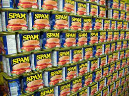

Spam & Pickles

This is almost enough Spam to get me through a week.
If you're trying to keep strict keto macros, nothing works better than Spam and pickles!
The Spam is almost exactly 80% fat and 20% protein by calories, so if you add a little fat
and some pickles for salt, you have a great keto meal.
This recipe uses cream cheese for added fat and olives and other garnishes for extra flavor.
Don't forget to add sodium and potassium!
Ingredients
- 1/2 can of spam
- 1/3 block of cream cheese
- Olives
- Pepperoncinis
- Sriracha
- Salt and potassium chloride (No Salt)
Steps
- Open the can and take out the Spam. Cut it in half.
- Put half the Spam in the fridge for later. Cut the other half into three slices.
- Top each slice of Spam with a slice of cream cheese, some Sriracha, and olives or peppers.
- Top everything with salt and No Salt.
- Also eat a couple of pickles.
- Check for ketosis, my nigga.